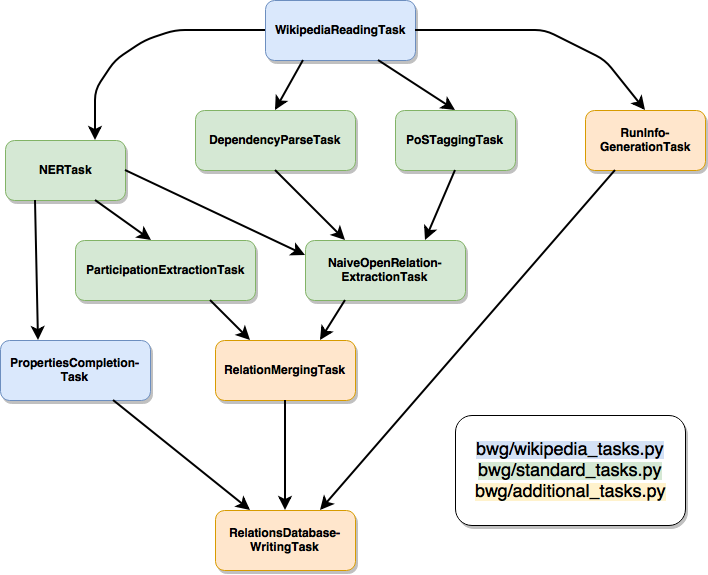

Pipeline
Installation
Installation is handled by Docker, so make
sure to have it installed beforehand. If you need to have any passwords
included, add them to a .env file in the project root directory in
the PARAMETER_NAME=VALUE format. By default, you must state a
password for the database using the parameter name NEO4J_PASSWORD.
Afterwards, the installation is fairly simple. Just go the root
directory of the project and execute the following command:
docker-compose build && docker-compose up
The building of the docker images in this project might take a while,
especially during the first time you’re using this project. After all
containers are running, you can run the pipeline by executing the
following:
Afterwards, you can make requests to the API using port 6050 by
default (see the documentation for bwg/run_api.py for more
information).
Data
Theoretically, the data can be any kind of text. The only prerequisite
is to provide the data in a shallow XML format, e.g.
<doc id="123456" url="www.url-to-text.com" title="The title or headline of this text.">
The text that is going to be processed comes here.
</doc>
You could start with creating your own corpus from Wikipedia,
downloading a Wikipedia XML dump and
following the instructions of the
MW-Dumper.
For steps involving Natural Languages Processing, appropriate Stanford
NLP models are
also required.
Writing your own pipeline tasks
If you want to modify existing pipeline tasks or write new ones, it is
recommended to add a new module to the bwg package, see e.g.
bwg/french_wikipedia.py as reference. You can inherit tasks from
other modules to solve common problems:
bwg/standard_tasks.py: Standard NLP tasks like PoS tagging,
Dependency Parsing etc.bwg/corenlp_server_tasks.py: Same standard NLP tasks, but using
the Stanford CoreNLP server instead to speed up cumbersome and
slow tasks.bwg/wikipedia_tasks.py: Reading an input file in the shallow
MW-Dumper XML format; extracting addtional information from
Wikidata.bwg/additional_tasks.py: Creating a file with information about
the current pipeline run, writing relationships into a graph database
and more.
With its standard configuration, the pipeline comprises the following
tasks:

Adjusting your pipeline configuration
If you add a new kind of task to the pipeline, make sure to include a
description of its necessary parameters in your pipeline configuration
file. You can use bwg/raw_pipeline_config.py as a template, which
provides a minimal example.
CONFIG_DEPENDENCIES = {
...
# Your task
"my_new_task": [
"{language}_SPECIFIC_PARAMETER",
"LANGUAGE_INDEPENDENT_PARAMETER"
],
...
}
Then you have to include those declared parameters somewhere in your
config file:
# My config parameters
ENGLISH_SPECIFIC_PARAMETER = 42
LANGUAGE_INDPENENDENT_PARAMETER = "yada yada"
If you implement tasks that extend the pipeline to support other
language, please add it to the following list:
SUPPORTED_LANGUAGES = ["FRENCH", "ENGLISH"]
Finally, create a module for your own pipeline (e.g.
bwg/my_pipeline.py) and build the configuration before running the
pipeline, using the pre-defined task names in your pipeline file:
import luigi
from bwg.nlp.config_management import build_task_config_for_language
class MyNewTask(luigi.Task):
def requires():
# Define task input here
def output():
# Define task output here
def run():
# Define what to do during the task here
if __name__ == "__main__":
task_config = build_task_config_for_language(
tasks=[
"my_new_task"
],
language="english",
config_file_path="path/to/pipeline_config.py"
)
# MyNewTask is the last task of the pipeline
luigi.build(
[MyNewTask(task_config=task_config)],
local_scheduler=True, workers=1, log_level="INFO"
)